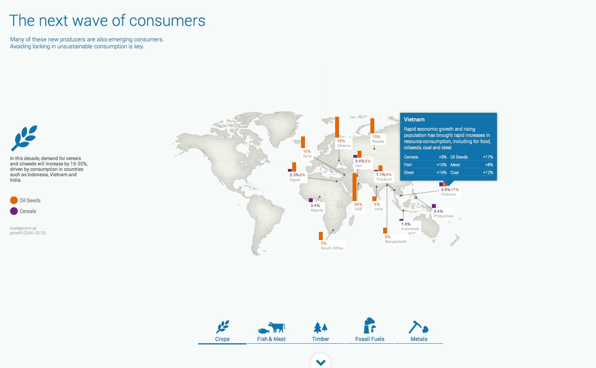
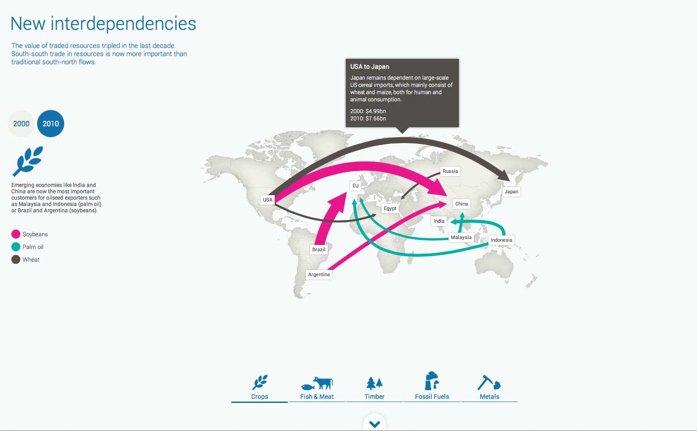
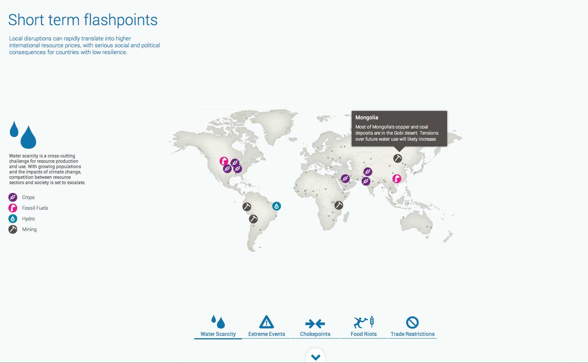

Description: The resource futures project features an interactive digital tool that shows the emerging economies that have become major centres of resource consumption, joining existing economic powers.
Year: 2012
Key Technologies: Javascript MVC, SVG

The project allows users to gain a high level overview of how resources are consumed and managed around the world, and helps to highlight threats to resource stability that should be considered.
The project makes use of a custom parallax scrolling system and a custom built JS-MVC architecture.

Complex animations were made possible by using Raphael.js to create animated vector graphics in both SVG and VML to ensure maximum browser compatibility. SVG also allows for more complex hit detection allowing the user to interact with irregular shapes such as curved lines.

The density of information on screen created a unique problem for the designers as the placement of elements combined with the data they represent resulted in a lot of overlaps. I implemented a design mode allowing the designers to position elements manually which generated a configuration object used in the production version of the project.